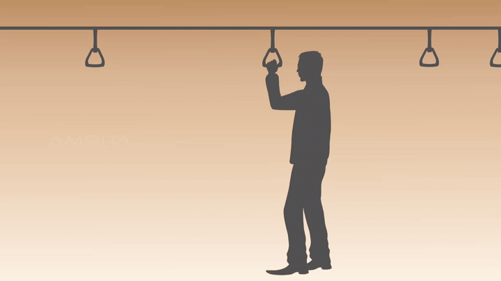
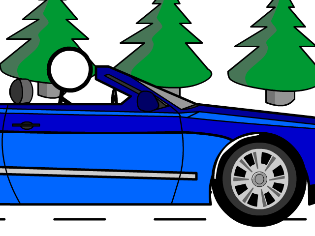

An object at reset remains at reset until an external unbalanced force is applied,
whereas an object in motion moves with uniform velocity.
This means that unless there is a net (unbalanced) force on an object, an object will continue in its current state of motion with a constant velocity.
If this velocity is zero (the object is at rest), the object will continue to remain at rest.
If this velocity is not zero, the object will continue to move in a straight line at the same speed.
However, if a net (unbalanced) force does act on an object, that object’s velocity will be changed (it will accelerate).
This sounds like a simple concept, but it can be quite confusing because it is difficult to observe this in everyday life.
People are usually fine with understanding the first part of the law: “an object at rest will remain at rest unless acted upon by a net force.”
This is easily observable
Examples of Newton's first law

This is an experience that we have to face in our ordinary life. It seems that when the stationary bus is started, the passenger falls behind.
This is because the lower part of the body gets a velocity and the upper part of the body remains stationary due to the application of force by the bus to the feet that were in contact with the bus

When traveling in cars, the seatbelt plants need the brake when they are used by the frontier,
the entire body is in the velocity of the vehicle.